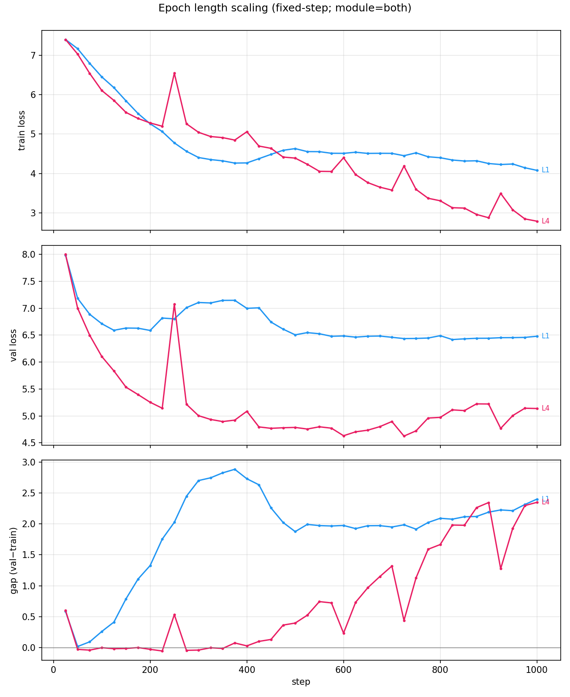
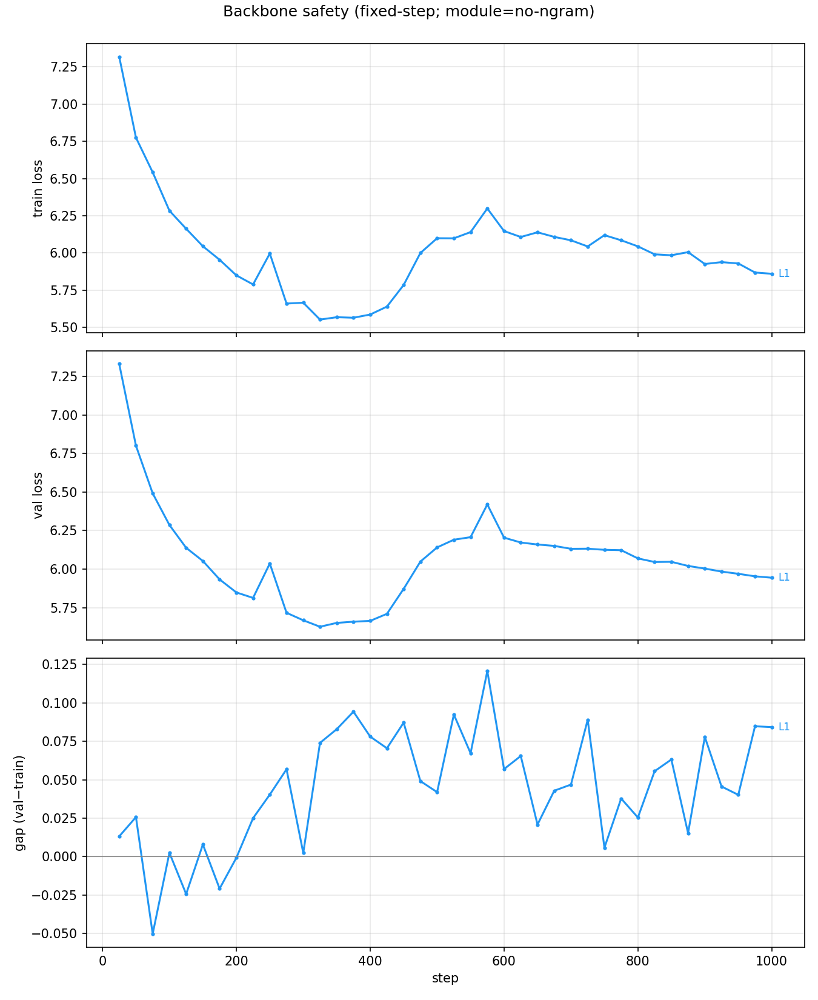
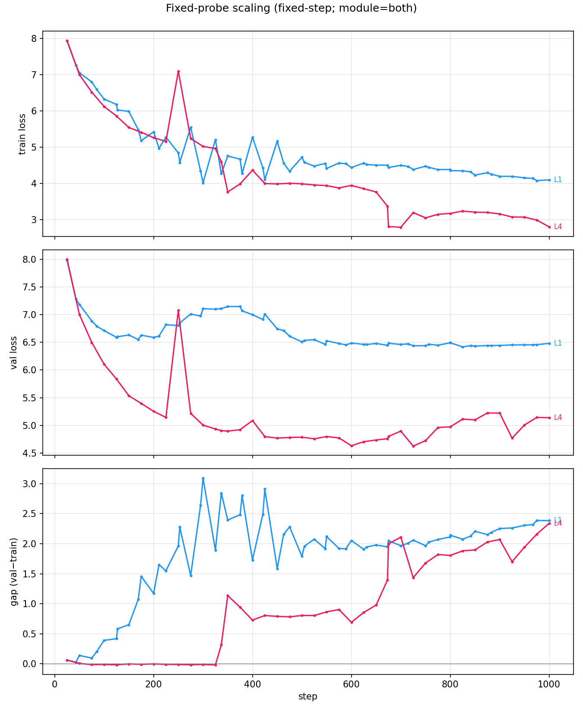
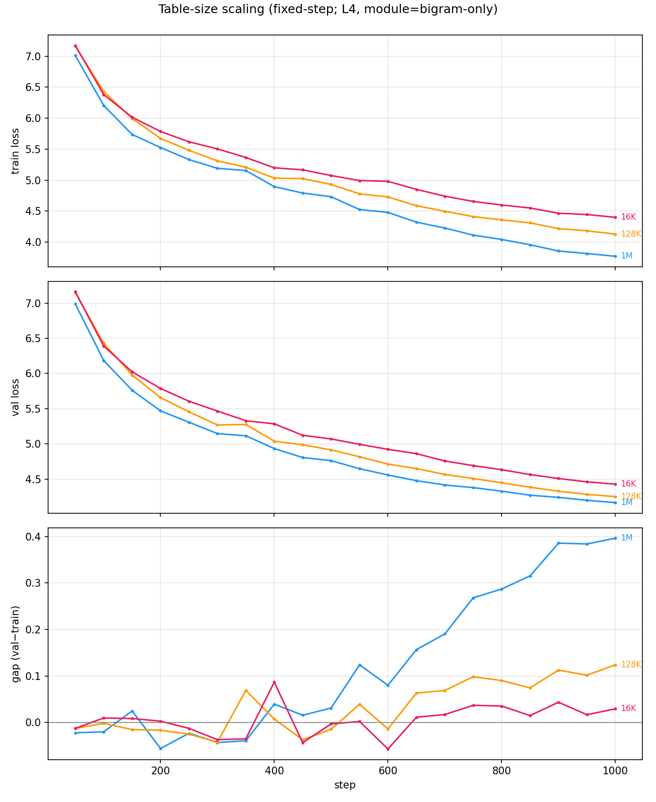
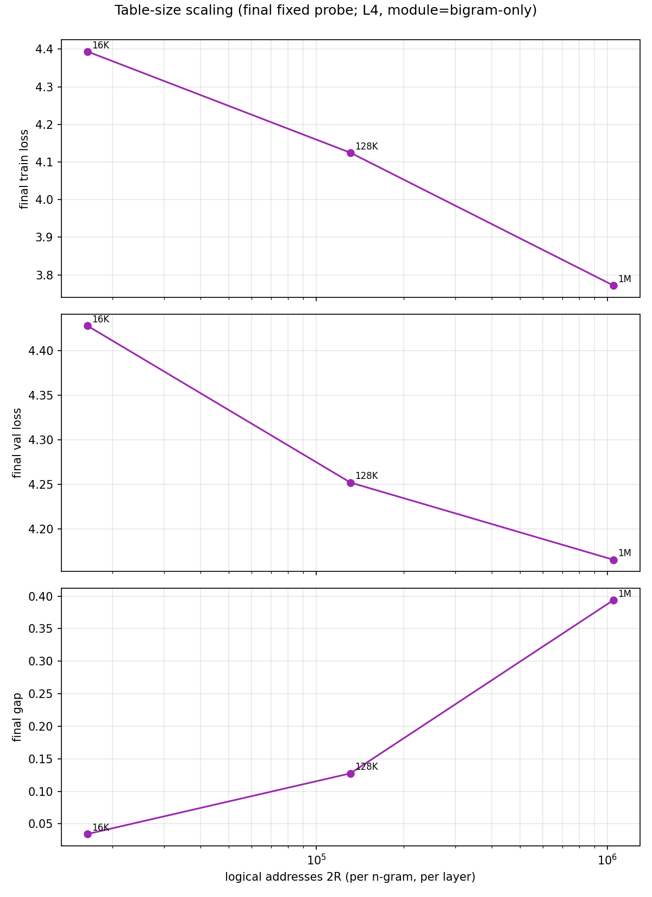

**实验线**：T-scaling（极简 setting 下验证三条 scaling 曲线）
**状态**：🟡 Pilot 完成（6 个 1000-step 完成 run）；L1 no-ngram backbone
safety 正在长训（截至当前快照 step 1681/5000）
**数据源**：`data/runs_scaling/`（新 namespace；β₂=0.99 全部生效）
**代码**：`tasks/s1_scaling_three_axis/`（launchers + analysis + 单测）
**计划**：`docs/plans/plan-3-fix-and-backfill.md`
在**唯一极简 setting**（vanilla nanoGPT 8L·6H·768D + input n-gram 注入，
自然语料）下，验证三条 scaling 曲线：
1. **Epoch 长度** `L`：训练集一个 epoch 的长度如何影响 gap（严格区分
fixed-step 与 fixed-epoch 两种对齐）。
2. **Exact context frequency** `f`：`G(E,f)` 是否服从两因素模型
`G(f) = A·f^(−β)·[1 − exp(−c·f^γ)]`（observational consistency）。
3. **Table size**：从默认 1M 逻辑地址**只向下**缩放，判断 gap 由参数量持续
决定，还是由 hash collision / occupancy 决定后饱和。
**claim 边界**：本专题只用自然语料，frequency 分支是模型一致性检验，
**不能**把 `f` 宣称为严格因果变量（DoD §9）。
当前本地 `data/runs_scaling/` 有 **7 个实验目录**：
结果，因此当前不能声称三条 scaling 已被完整验证。
每个已完成 run 都有：
最后快照有 63 个 bigram exact-f 值、57 个 trigram exact-f 值可用于
初步比较；
日志数据约 **555 MB**，其中约 **142 MB** 来自仍在写入的 backbone safety
exact-frequency 日志。所有已完成 run 的固定 train probe hash 都是
`38d1254a827759d6`，可直接横向比较。
**暂时结论 F1 · gap 主要来自 n-gram 表重播，而非 backbone**：两个
1000-step no-ngram 对照的固定 gap 都接近 0，而 both 臂明显更大。这个结论
仍需等待 L1 no-ngram 5000-step safety 完成；当前 safety 在 step 1000 时
gap 为 +0.77，step 1681 时已到 +2.59，说明长训 backbone 也可能产生
non-negligible gap，不能再写成“backbone 自身不会产生 gap”。
**暂时结论 F2 · fixed-step 下短 epoch 的 gap 明显更大**：L1（约 23
次重播）gap = 3.59，L4（约 3 次重播）gap = 0.74，约 4.8 倍。它支持
“更多 replay 会放大 gap”的解释，但还不是纯粹的 epoch-length scaling，
因为 fixed-epoch 对齐和完整 L1–L4 网格尚未完成。
（fixed-epoch 对齐的 full grid 才能分离「重播次数」与「epoch 长度本身」的效应。）
**暂时结论 F3 · table 越小 gap 越小（单调）**：1M→128K→16K
（逻辑地址从 1,048,576 降到 16,384），gap 为 **0.394→0.128→0.034**。
occupancy 诊断显示三点的 bigram collision rate 约为 **0.852→0.981→0.998**，
平均 co-occupants 约为 **94.6→756→6048**。这与 collision pooling 的方向
一致：小 table 把更多 context 混入同一 row，削弱逐 context 记忆。但现在只有
3 个 table size、1 个 module、1 个 seed，尚不足以区分 collision 曲线与
参数量曲线，也不能判断是否已经进入 plateau。
在满足纳入标准的 exact-f 上，bigram 的 gap 随 f 增大总体下降；例如：
这与“低频 context 更容易产生较大的 train–val gap”的 observational
pattern 一致。当前图是按 exact-f 先应用纳入标准、再在 log-frequency bins
内取中位数的降噪展示；它不是两因素公式的正式拟合。正式拟合还缺
epoch 截面、trigram-only 分支、权重与 profile-likelihood / 可辨识性分析。
`bb_safety_L1_nogram_5000` 仍在运行，当前本地快照为 step **1681/5000**：
因此，早期 no-ngram 对照支持 n-gram-induced gap，但长训 safety 已经显示
backbone-only gap 会增长。最终表述必须以 5000-step 结果为准，不能使用
“backbone gap 恒为零”的强结论。
唯一变化变量，不依赖跨面板共享 legend。
独立 backbone safety 对照。table 图固定 `L4 + bigram-only` 后只比较
`table_mult`。final summary 仍只报告 fixed probe 的 train/val/gap 三项。
开发代码全部位于 `tasks/s1_scaling_three_axis/`，包括训练副本、
`ngram_freq.py`、`table_occupancy.py`、launcher、分析脚本和测试；它们不再
通过相对路径调用根目录 `code/`。附录目录只保存面向阅读的报告、图和结果摘要。
各集群均应使用本仓库的独立副本，路径由启动环境中的 `NGLAB_ROOT` 指定，
结果写入各自的 `data/runs_scaling/`，不会跨机共享同一 run 目录。启动前必须：
1. 先完成本地 `py_compile` 与测量单测；
2. 同步整个 `tasks/s1_scaling_three_axis/`；
3. 用 `md5sum` 核对任务内 `code/` 与 launcher；
4. 确认目标 GPU 空闲后，再从任务目录启动 pilot/full launcher。
360-1 当前约有 400 GB 可用空间，可与 360-2 并行排队；这只是资源条件，
不代表 full grid 已启动。backbone safety 和 pilot QC 完成前不启动完整网格。




